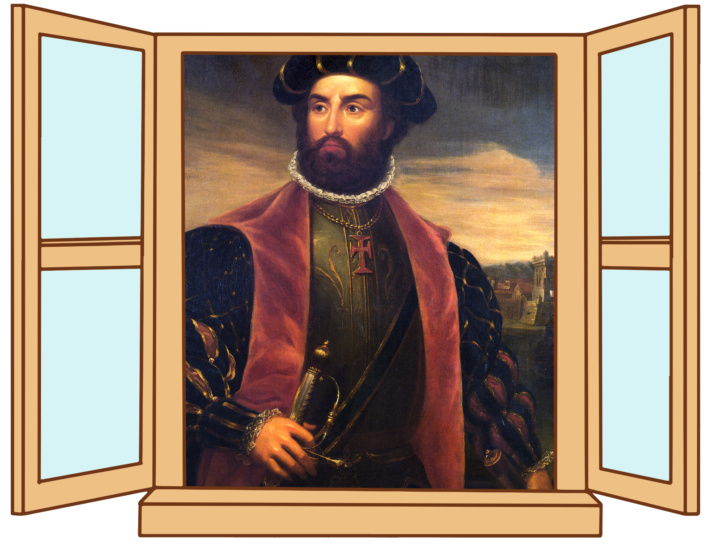

Olá chamo-me Vasco da Gama e sou um veterano nas navegações dos oceanos. Já realizei vários projetos como o de desenvolvimento de um caminho maritimo para a Índia. Também sou vice-rei da Índia.
Educação
| Instituição | Ano de conclusão | Conhecimentos adquiridos |
|---|---|---|
| Estudos em Évora | 1489 | Aprendeu matemática, astronomia, latim e os princípios básicos de cartografia e navegação. |
| Ordem de Santiago | 1492 | Recebeu a formação prática e militar exigida aos cavaleiros da época. |
| Tutoria com Abraão Zacuto | 1497 | Aprendeu a usar o astrolábio de metal aperfeiçoado e as tábuas astronómicas do Almanach Perpetuum. |
Experiência
Navegador e Explorador:
Comandou a frota que realizou a primeira viagem marítima direta entre a Europa e a Índia, contornando o Cabo da Boa Esperança.
Administrador e Vice-Rei:
Atuou na gestão dos domínios ultramarinos portugueses e foi nomeado Vice-Rei da Índia no final da sua vida.
Competências
- Navegação de Alto Mar (Astronómica e Estimada);
- Cartografia e Hidrografia;
- Manobra de Navios e Logística Naval;
- Ciência Militar e Combate Naval;
Glossário
Hidrografia
Ramo da geografia física que estuda, classifica e descreve as águas do planeta Terra, incluindo oceanos,
mares, rios, lagos, águas subterrâneas e geleiras.
Cartografia
Ciência, técnica e arte dedicada a conceber, produzir, analisar e utilizar mapas, cartas e outras formas
de representação gráfica da superfície terrestre.
Contato
Email: vascodogama@email.com